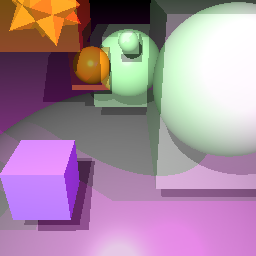
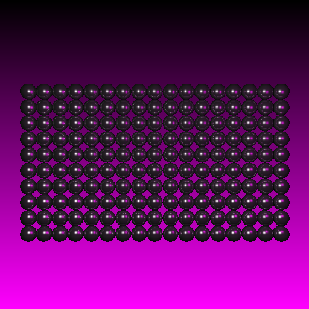
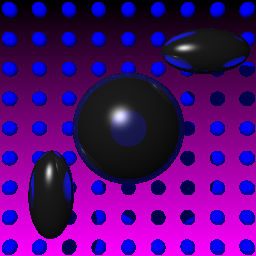

Objective 1:
Uniform Spatial Subdivisions
(Grid Creation, WCS Axis-Aligned Bbox Transformations and Voxel Traversal)
Initially, I wrote Axis-Aligned Bounding Box code for every primitive, and then wrote methods to convert these between spaces (MCS AABB -> WCS OBB -> WCS AABB).  Then I wrote code to create the Voxels, determine which voxels contained the WCS AABB of each primitive, and then I wrote a 3D-DDA style Voxel traversal algorithm based on the paper The initial results were pretty good for primitive scenes with a grid of spheres or a grid of cubes. Meshes though could be improved, and later on I will discuss this.  Naive Method: 279 seconds.
 Naive Method: 25 seconds. |
Written by: Mike Jutan
CS 488 - Computer Graphics
University of Waterloo